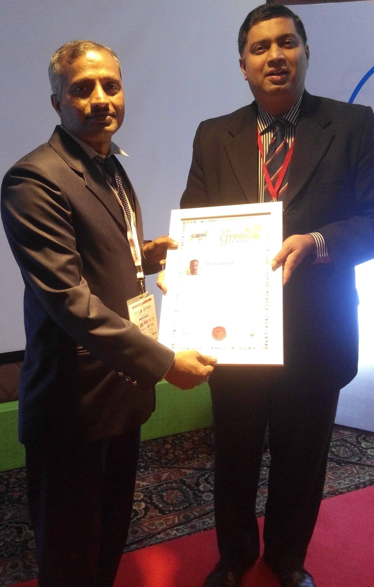
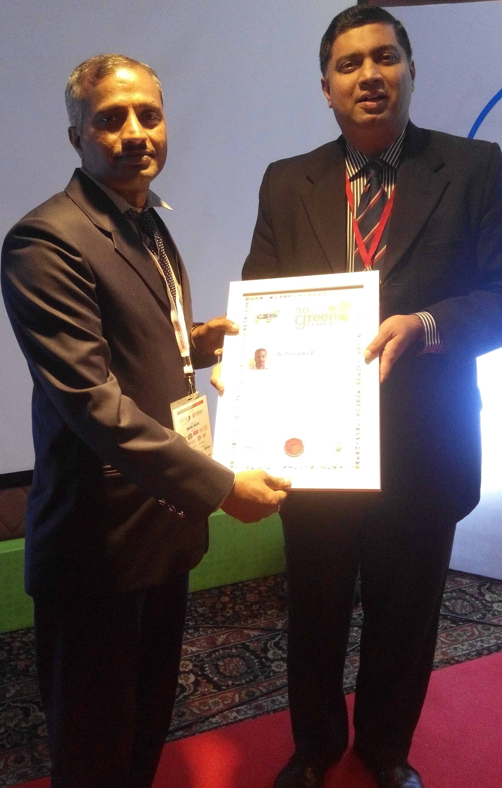
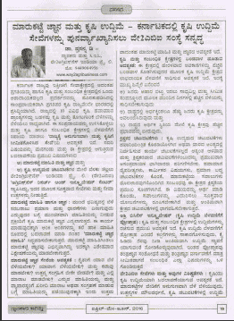
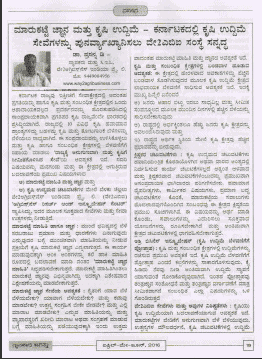

Way2Agribusiness India Pvt. Ltd. is a social enterprise, incorporated in March 2014, address the issue of agribusiness exposure and market knowledge on agri commodities and trading in agri-tech products and agricultural produce. Our core focus is to assist transformation of agriculture or farming activities into agribusiness. Our objective is to be a one-stop solution provider for farmers and agribusiness enterprises with a mission is to enhance the business competitiveness of participants in agri and allied sectors mainly farmers and agri-entrepreneurs through our enabling products and services.
To be a one-stop solution provider for farmers and whole gamut of agribusiness enterprises.
To enhance the business competitiveness of participants in agri and allied sectors mainly farmers and agri-entrepreneurs through our enabling products and services.


How to transform agriculture into agribusiness? What are the professional services will evolve in this transformation process? And how best a start-up can engage and contribute in a niche manner to assist this transformation process? These were thought provoking questions faced by the founder of Way2Agribusiness India Pvt Ltd. With the past experience as a agribusiness scholar, farmer, agribusiness analyst, working at different capacities at agribusiness entities and Knowledge Partner to the Govt. initiative, Dr. Prasanna Dyavegowda (Director & CEO, Way2ABI), who holds doctoral degree in agribusiness management, working to assist transform of agriculture into agribusiness in a niche manner through Way2ABI products & services.
Origin of our idea and innovation started with the work experience of Dr. Prasanna, who is instrumental in implementation of Way2ABI’s concept “Five for Five”. He brought out this concept after relevant experience in various agribusiness entities in different capacities and also being experienced as a Resident Project Manager from the team of “Knowledge Partner cum Transaction Advisor by Mahindra and PWC” for the Govt. of Karnataka initiative “Bounteous Karnataka (Agri Investors Meet)” under Dept. of Agriculture. Our concept “Five for Five” indicates five innovative products & services for five stakeholders in agribusiness sector including the farmers, agri entrepreneurs, trading community, agri-tech product suppliers and Govt. Depts. Five products & services are Way2Agritech (agri inputs), Way2Foods (agri output), Way2ABI Agri FBI (market intelligence App), Way2Market Agri CM (trading platform App) and PMC (agri project services). Our innovation can be termed as a combination of product, service and business model innovation mainly in the area of agribusiness.
We Way2Agribusiness India Pvt. Ltd., deal in both agri inputs and agri output for the benefit of farmers and consumers. Agri inputs being handled under the brand “Way2Agritech” which covers agri inputs, implements and machineries those are used by the farmers in their crop cultivation operations. Agri output being handled under the brand “Way2Foods” which covers those are grown and supplied by the farmers and they will be looking for market creation for the same.

“Way2Agritech” is a comprehensive agri-technology solutions covering agri inputs, implements and machineries for the farmers and other users. The objective of Way2Agritech is to catalyst agricultural technology adoption by the farmers, knowledge transformation and promotion of quality agri-tech products and sales generation. Way2Agritech will be a channel partner between farmers or technology users and the manufacturers. Some of the key initiatives taken up under Way2Agritech are physical outlet, technical guidance to farmers, facilitation of new and customized technology development etc. Online services under the brand Way2Agritech included Mob App Way2Agritech and e-commerce portal www.way2agritech.com. Product specific websites for different categories of products covers www.powertiller.in (for farm machineries & implements), www.drsoilhealth.com (for plant growth promoters & plant protection products) and www.urbanagriculture.in (for terrace garden products).

“Way2Foods” is a registered Trade Mark by Way2Agribusiness India Pvt Ltd to supply vegetables, fruits, groceries and other food products to its customers. Quality and consistence supply is the core focus of Way2Foods. Over 300 products and services offered including fresh produce, value added products & combo packs to households, apartments, HORECA, institutional buyers etc. under Way2Foods. Branded combo packs such as Way2Foods Spices Combo, Millets Combo and Nuts Combo and convenient combo packs like Way2Foods Combo - Essential Vegetables are part of our supplies. The key features of Way2Foods includes direct sourcing from farmers, aggregation at APMC - Bengaluru, primary processing of output and finally supply of produce to selected customers. Way2Foods aims to create market for farmers’ produce and also offer better services for customers with strong online presence. Under the umbrella brand Way2Foods, online platforms developed included www.way2foods.in (e-commerce portal), www.way2vegetables.com (for vegetables & fruits) and www.way2groceries.in (for groceries).

Way2ABI offers professional end to end PMC services in the Agri and Allied sectors in the State of Karnataka. These project services would include a) project planning, b) project execution and commissioning and c) operations management and retainer services besides marketing support. Sizable agribusiness projects would be considered under this services. About 25 project services those are suitable in the State of Karnataka have also been identified. Potential service users can fill and submit the below enquiry form and Way2ABI would respond to such enquiries.

Best Trading Platforms, mobile revolution led and IT enabled, need to emerge within the system. Way2Market Agri CM App would connect the farm and the market. Under “Store – Availability”, the Customers can view list of agricultural produce and products available for sale and can contact the farmers and others. Under “Wish list – Requirements”, the Marketers can search and contact the Customers from the list of categories of farm produce and products. Both the Customers and the Marketers can post their requirements and availability respectively under “Menu”.

“Way2ABI Agri FBI” App provides periodical price outlook and market insights for crops such as Coffee, Arecanut, Pepper, Coconut and Copra, Cashew nut, Maize, Tur, Cotton, Onion and Tomato. Content of this innovative and revolutionary App is based on extensive research and analysis covering market fundamentals, application of statistical tools and technical analysis. Periodical price outlook and strategies offered in the App would help the farmers to take crop cultivation, holding and selling decisions.

Content - Price outlook, market review & summary, bull & bear factors, graphs & charts, news & events, and Agri-tech Solutions Periodicity - Monthly reports and seasonal reports
10 crops - coffee, arecanut, pepper, coconut & copra, cashew nut, maize, tur, cotton, onion and tomato Price outlook & market insight includes all major markets in Karnataka besides outside the State key markets
Provision for agri-tech Solutions and linkage with “Way2Market Agri CM” App Provision for telephonic discussion and need based interim report Value added services: Customized reports and strategies to achieve better prices
Based on the fundamentals, technical and statistical analysis Crop insights from the field and the trade sources
Customized services for needy farmers and the buyers It is for selected commodities and linked with size of operations Individual customer account covers information from himself & Way2ABI strategies
Install “Way2ABI Agri FBI”, specify your credentials and subscribe after trial period Compatible App technology and it will be in both Kannada and English Go ahead with uninterrupted services

For farmers, traders, processors, exporters, outside state buyers and input suppliers Provision for campaign, photos upload, notification, bidding & rating
Linkage with all major crop clusters in Karnataka Large sellers and buyers database incl. buyers from outside the State
Provision for telephonic discussion and need based advisory services Value added services-Agri tech solutions & linkage with Way2ABI Agri FBI Commodities price outlook & market insights in brief
Coverage on major crops grown in Karnataka Fresh crops, processed products, niche products and agri inputs and machineries
Provision for sourcing of suitable inputs, equipments & machineries at competitive prices Performance linked services-Screening and sales basisBusiness strategies, project planning and execution support
Install “Way2Market Agri CM”, specify your credentials & post availability or requirements and subscribe after trial period Compatible App technology-GPS enabled & need based technology update Go ahead with uninterrupted services
Way2ABI address the following problems.
 

 
